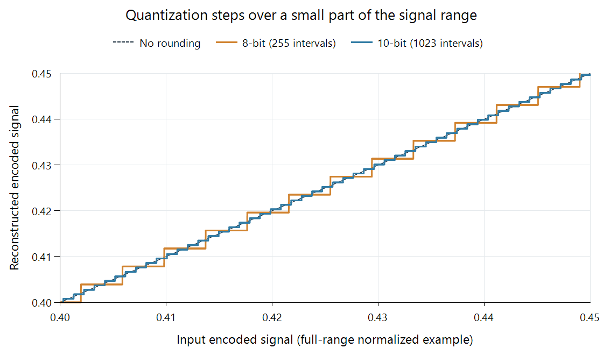

Video Bit Depth
An 8-bit component sample can select one of 256 unsigned values. A 10-bit sample can select one of 1,024. Bit depth changes how finely a component's value can be represented; it does not change how many picture positions are present.
| Precision per component | Possible unsigned codes | Code interval |
|---|---|---|
| 8 bits | 2⁸ = 256 | 0–255 |
| 10 bits | 2¹⁰ = 1,024 | 0–1,023 |
| 12 bits | 2¹² = 4,096 | 0–4,095 |
“10-bit video” usually describes the precision of each coded component sample. It does not mean ten bits for all three components combined. With chroma subsampling, a frame also contains different numbers of luma and chroma samples.
Smaller steps across the same signal interval
For a normalized full-range component, the endpoints 0 and 1 span 255 intervals at 8 bits or 1,023 intervals at 10 bits. Adjacent reconstructed values are therefore separated by 1/255 or 1/1,023 respectively.

A magnified interval of encoded signal values. The axes are normalized signal coordinates, not physical light or nits.
At input value 0.43, nearest rounding gives:
- 8-bit: round(0.43 × 255) = 110; reconstructed value 110/255 ≈ 0.431373.
- 10-bit: round(0.43 × 1,023) = 440; reconstructed value 440/1,023 ≈ 0.430108.
The errors for that point are approximately +0.001373 and +0.000108. Their ratio varies with the selected point. The general bound is more useful: away from clipping, nearest rounding is within half a step, about 0.001961 at 8 bits or 0.000489 at 10 bits in this example.
The finer grid lets a gentle gradient cross more intermediate values before reaching its endpoint. Whether those steps become visible also depends on the transfer relationship, the image, subsequent processing, and viewing conditions. Color banding develops that visual consequence.
Nominal range uses a subset of the codes
Limited-range video assigns black and nominal white inside the available unsigned interval. For a common luma coding, 8-bit black and white are 16 and 235; the equivalent 10-bit codes are 64 and 940.
The nominal luma interval consequently has 220 integer code points at 8 bits and 877 at 10 bits, including both endpoints. The spacing is governed by 219 and 876 intervals. Chroma uses its own scaling and neutral offset. Bit depth and range jointly determine those numerical conventions.
At a fixed transfer relationship, finer encoded steps usually give finer light steps too, but those light steps need not be uniform. For example, PQ assigns a nonlinear light meaning to its signal coordinates. Ten bits describe precision; PQ supplies the light interpretation.
Precision through a conversion
For an Emby playback route, the source precision helps establish the decoder's required profile, while the working format describes the processing surface. The encoder's output precision is another explicit choice. Those stages identify where intermediate values can be retained or rounded.
Higher-precision working values are useful even when the source is 8-bit. Scaling, color conversion, and tone mapping can calculate intermediate values between its original codes. Keeping those results at higher precision postpones a new rounding decision until the output needs a particular representation.
Simply promoting unchanged 8-bit samples does something narrower. In a compatible limited-range conversion, code 110 can become code 440 at 10 bits: (110 − 16)/219 = (440 − 64)/876. The numerical signal meaning is preserved, but the original intermediate gradations have not been discovered.
Reducing precision makes the opposite decision. Multiple higher-precision results must share fewer output codes. Dithering can distribute those rounding choices to reduce coherent visible steps.
Coding precision and storage width
A 10-bit sample may occupy a 16-bit word in a decoded processing buffer. P010, for example, stores ten meaningful bits in a wider word. That storage convention makes samples convenient to access; it does not give the coded picture sixteen bits of original precision.